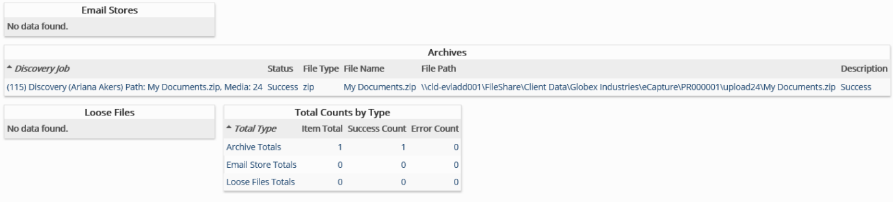

This report provides a list of the top level containers for selected case.
Complete the following selections:
Report Title: A report title is selected by default; change the title if needed.
Discovery Job: (Optional) Select one or more discovery jobs for which the report is to be generated. If a specific job is not selected, the report will run against the entire case.
